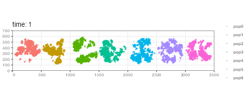

Programming dispersion dynamics
Source:vignettes/vignette-03-interactions.Rmd
vignette-03-interactions.RmdIn addition to buidling models that capture movement or expansion using a set of simple R functions, slendr makes it possible to program more subtle parameters of spatial population dynamics.
Among such parameters are so called spatial interactions, described in a very detailed way in chapter 15 of SLiM’s extensive manual. Describing this functionality is beyond the scope of slendr’s tutorial vignettes such as this one but broadly speaking, slendr implements three different kinds of spatial interactions or dispersal parameters:
-
Spatial competition distance - governed by slendr parameter
competition_dist,which signifies the maximum distance at which two individuals can influence each other’s fitness via competition. -
Mate choice distance - governed by the parameter
mate_dist, determining how far does an individual pick a potential mate. -
Dispersal distance - determined by the parameter
dispersal_distwhich establishes how far from a parent can offspring migrate until the next generation (when it can potentially become a parent itself). More accurately, this parameter determines the standard deviation of a normal distribution of such dispersal distances.
All three parameters can be specified for each simulated population individually in the population() call. Alternatively, default values for these parameters can be given in a compile() call and are then used for all populations in the model. Importantly, a population must be given the values of all three of these parameters, be it specific values for that particular population or a default value during compilation.
Finally, as with other functions for programming model spatial dynamics, the slendr package provides a simple way to change the spatial interaction dynamics throughout the course of the simulation. Even complex models can be programmed using only a couple of lines of extremely simple R code, resulting in a robust SLiM simulation script being generated under the hood.
To demonstrate this feature, let’s look at a simple example.
Here are seven populations occupying a circular range on a blank landscape 3500 distances units wide and 700 distance units tall. All are programmed to appear in the simulation in generation one and have the same number of individuals.
N <- 3000; y <- 350; r = 240
p0 <- population("pop0", time = 1, N = N, map = map, center = c(250, y), radius = r)
p1 <- population("pop1", time = 1, N = N, map = map, center = c(750, y), radius = r)
p2 <- population("pop2", time = 1, N = N, map = map, center = c(1250, y), radius = r)
p3 <- population("pop3", time = 1, N = N, map = map, center = c(1750, y), radius = r)
p4 <- population("pop4", time = 1, N = N, map = map, center = c(2250, y), radius = r)
p5 <- population("pop5", time = 1, N = N, map = map, center = c(2750, y), radius = r)
p6 <- population("pop6", time = 1, N = N, map = map, center = c(3250, y), radius = r)
plot(p0, p1, p2, p3, p4, p5, p6)
Next, we will program a series of changes in the parameter governing the maximum competition distance of these populations which influences how “clumpy” the population spread is. If there is lots of competition, individuals will tend to minimize this competition by separating from each other as much as possible. We are going to do this in sequence, so that we can clearly see the changes in spatial dynamics over time. We note that this is hardly a realistic model for any evolutionary scenario, but when animated, it will allows to see the influence of the parameter choice on the spatial dynamics that emerges from the simulation.
p1 <- dispersal(p1, time = 100, competition_dist = 80)
p2 <- dispersal(p2, time = 200, competition_dist = 130)
p3 <- dispersal(p3, time = 300, competition_dist = 170)
p4 <- dispersal(p4, time = 400, competition_dist = 220)
p5 <- dispersal(p5, time = 500, competition_dist = 300)
p6 <- dispersal(p6, time = 600, competition_dist = 350)Having defined the spatial dynamics, we will compile this model and execute the simulation. Note that because we are working with a forward time model, we need to specify the total length of the simulation to know when to terminate it.
model <- compile(
populations = list(p0, p1, p2, p3, p4, p5, p6),
generation_time = 1, resolution = 1, sim_length = 1000,
competition_dist = 10, mate_dist = 10, dispersal_dist = 5,
dir = file.path(tempdir(), "spatial-interactions"), overwrite = TRUE
)In order to let the populations reach an equilibrium of the spatial spread at the beginning of the simulation, we will let the simulation run through a burnin period of 100 generations. We will also save the spatial locations of all individuals in order to visualize the spatial population dynamics with an animation later.
slim(model, seq_length = 1, recomb_rate = 0, save_locations = TRUE,
burnin = 100, method = "batch", verbose = TRUE, seed = 314159265)Now that the simulation finished running, lets re-capitulate the spatial population dynamics simulated by the SLiM backend script bundled with our package as an animated GIF:
animate(model, steps = 150, width = 500, height = 200)
Fun animation, isn’t it? If you compare the result to the model dynamics we programmed above, you can see that the spatial dynamics follow what we would expect based on the parameter values. As the time progresses, the spatial competition for the series of populations is getting fiercer and fiercer (the distance at which individuals can “feel” the competition is getting larger and larger), forcing the individuals to form more and more distant clusters. Compare this to the starting state of the simulation, in which all populations form a single randomly shifting “blob” of individuals which is allowed by the model because individuals barely compete with each other.
Depending on a species or population under study, these abstract parameters (and the spatial clustering or “clumpiness” they represent) could mean all sorts of things and could be used to model various phenomena in nature (competition for resources, shifting metapopulation dynamics, formation of “tribes”, etc.).
It needs to be said that unlike the spatial population dynamics functionality described in the main tutorial, which is a unique feature of slendr, the example in this vignette could be reproduced in pure SLiM using vanilla Eidos code. However, I think it is fair to say that the slendr R code is much more flexible and easier to tweak and extend towards much more complex scenarios. Again, as mentioned several times throughout the documentation, this is another good example of how the simple slendr R interface lets you focus on the difficult part of modeling (specifying spatiotemporal model dynamics), get immediate visual feedback during model building, and leverage the powerful SLiM simulation framework as a low level computational engine.